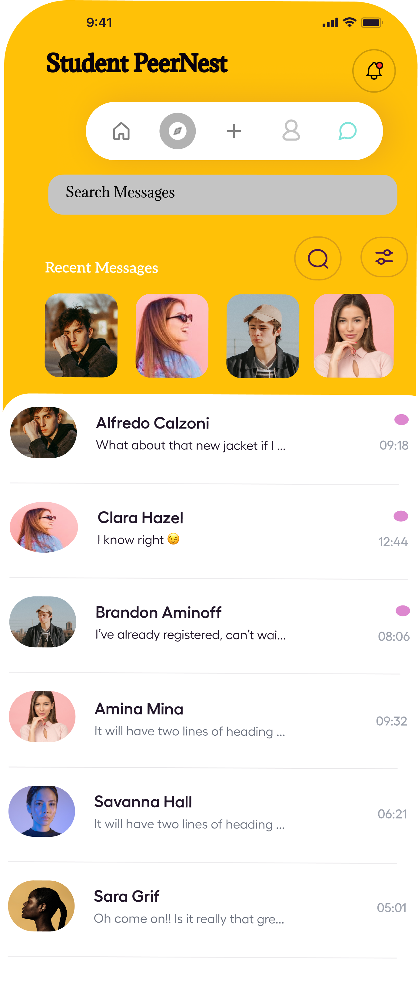

Computer Science student building user centered systems through research design and development

A research driven application designed to support connection among online students
StudyBuddy is a UX research and design project focused on helping online students discover classmates build study groups and communicate effectively. The project combines user research interaction design frontend development and relational data modeling.
View Case StudyFrontend focused projects demonstrating responsive layout design, client side state management, and interactive user experiences built with HTML, CSS, and JavaScript.
Engineering focused coursework and projects emphasizing relational database design, system integration, and service based architectures including independently implemented backend microservices.